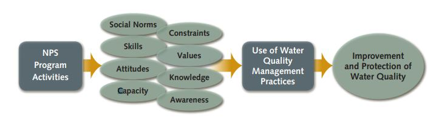

2 Human Dimensions of Water
Learning Objectives
- Review the origins of the study of human-environmental interactions in the social sciences
- Explore theoretical perspectives and research questions studied by natural resource social scientists
- Identify government agencies and nonprofit organizations that employ natural resource social scientists
- Evaluate the role of social science research in monitoring and protecting the Great Lakes
The restoration and protection of water resources is not solely a technical or ecological challenge. While natural science monitoring can identify pollutants, track ecological change, and evaluate restoration outcomes, it cannot fully explain why environmental degradation occurs in the first place - or why some management strategies succeed while others fail.
Social science research helps us understand why people believe and act in particular ways. This information is critical for developing programs, polices, and plans that members of the public will support. This is essential for creating solutions that effectively address environmental problems, and for analyzing where processes intended to meet public needs fall short or break down.
When it comes to watersheds, human actions play an outsized role in shaping environmental outcomes. Decisions about land use, infrastructure, waste disposal, and resource consumption are made by individuals, households, organizations, and governments. People, all the way down! Understanding these decisions requires tools that focus on humans, institutions, and social systems.
This chapter will familiarize you with social science research and how social scientists think about humans in the environment.
2.2 Human-Environment Relationships
For much of the early history of social science, environmental impacts were treated as secondary to economic development and social organization. However, by the 1960s, industrial production in U.S. cities had created severe environmental degradation, creating a tipping point and inspiring social movements that social scientists could not ignore. New theoretical perspectives were developed to explain the relationship between humans and the environment.
These ideas guided new fields of research and continue to shape how environmental problems are understood, as well as how management strategies are designed.
The New Ecological Paradigm is a perspective evaluating the extent to which a person’s environmental worldviews prioritize the connection between humans and nature, and belief that society has ecological limits (Dunlap and Van Liere, 1978). This theory was used to develop a set of survey questions intended to measure whether individuals believe environmental degradation is a serious concern and whether they support environmental protection even when it restricts human activities. In watershed management, NEP helps explain variation in public concern for water quality and support for conservation efforts.
The Treadmill of Production perspective argues that modern capitalist societies are organized around continual economic growth, which requires increasing extraction of natural resources and generates growing amounts of pollution (Schnaiberg, 1980). According to this theory, governments, businesses, and workers often share an interest in expanding production, even when environmental consequences are well understood. Environmental degradation is therefore not simply the result of individual behavior, but of structural pressures embedded in economic and political systems. From this perspective, water quality problems persist because economic priorities repeatedly outweigh ecological concerns.
Ecological Modernization theory offers a more optimistic view of the relationship between economic development and environmental protection. Rather than seeing growth and environmental quality as inherently incompatible, this perspective emphasizes technological innovation, institutional reform, and policy tools that reduce environmental impacts while allowing economic activity to continue (Spaargaren & Mol, 1992; Siegel, 2019). Examples include improved wastewater treatment, cleaner production technologies, and incentive-based environmental policies. In watershed management, ecological modernization supports strategies that rely on infrastructure investment and regulatory improvement to achieve environmental goals.
Environmental Justice focuses on the unequal distribution of environmental harms and benefits across social groups. Research in this tradition documents how low-income communities and communities of color are more likely to be exposed to pollution and environmental hazards, while also facing barriers to accessing environmental amenities such as clean water and recreational spaces (Bullard, 1990). Environmental justice scholars emphasize that these patterns result from historical processes, policy decisions, and power imbalances rather than individual choices. In watershed contexts, this perspective draws attention to whose waterways are impaired, who benefits from restoration, and who participates in decision-making.
The Theory of Planned Behavior explains environmental actions by focusing on how individual decision-making is shaped by attitudes, social norms, and perceived behavioral control - or a person’s ability to act given available resources and constraints (Ajzen, 1991). In conservation research, this theory is often used to understand why people do or do not adopt recommended practices, even when they express environmental concern. Applied to watershed management, the theory highlights the importance of capacity, access, and social expectations in shaping conservation behavior (Prokopy et al., 2009).
Each of these perspectives highlights different dimensions of environmental problems and suggests different approaches to management. No single theory fully explains the complexity of watershed management challenges. In practice, social scientists and environmental managers often draw on insights from multiple perspectives to better understand stakeholder behavior, anticipate conflict, and design more effective and equitable management strategies.
2.4 Summary
Social science research helps explain why people think, behave, and make decisions in particular ways, and why environmental policies and management strategies succeed or fail in practice. Because human actions play an outsized role in shaping environmental conditions, the social sciences provide essential tools for understanding environmental problems and designing responses that are socially feasible as well as ecologically effective.
Theoretical perspectives such as the New Ecological Paradigm, Treadmill of Production, Ecological Modernization, Environmental Justice, and the Theory of Planned Behavior offer different lenses for interpreting human–environment relationships. Each emphasizes distinct drivers of environmental change, ranging from individual values and beliefs, to economic structures, technological systems, institutional arrangements, and social inequalities. Together, these theories highlight that environmental problems are not solely technical or scientific challenges, but are deeply embedded in social systems.
In watershed management, social science theories help clarify why stakeholders hold different priorities, why some conservation practices are adopted while others are resisted, and how power, resources, and capacity shape management outcomes. To support applied decision-making, standardized social indicators provide a way to systematically measure public awareness, attitudes, and constraints across communities. When combined with ecological data, these approaches enable managers to better evaluate tradeoffs, anticipate conflict, and design more effective and collaborative management strategies.
2.5 Reflection Questions
- Different theories highlight different causes of environmental problems. Which theoretical perspective do you find most convincing for explaining water quality challenges in the Great Lakes, and why?
- Sociological theories operate at different levels, from individual behavior to social institutions and power structures. How does the level of analysis used by a theory influence the types of management strategies it suggests?
- Watershed management often involves disagreement among stakeholders. How might different theories help explain why stakeholders disagree about solutions, even when they share concern about water quality?
- Social indicators are used to measure attitudes, awareness, and constraints. Which aspects of human behavior or decision-making do you think are most important to measure when evaluating watershed management efforts?
2.6 References
Ajzen, I. (1991). The theory of planned behavior. Organizational Behavior and Human Decision Processes, 50(2), 179-211. https://doi.org/10.1016/0749-5978(91)90020-T.
Bullard, R. D. (1990). Dumping in Dixie: Race, Class, and Environmental Quality. Boulder, CO: Westview Press.
Conley, D. (2019). You May Ask Yourself: An Introduction to Thinking Like a Sociologist, 6th edition. New York: W.W. Norton.
Dunlap, R. E., & Van Liere, K. D. (1978). The “New Environmental Paradigm”: A proposed measuring instrument and preliminary results. Journal of Environmental Education, 9(4), 10-19. https://doi.org/10.1080/00958964.1978.10801875.
Genskow, K. and Prokopy, L. (eds.). (2011). The Social Indicator Planning and Evaluation System (SIPES) for nonpoint source management: A handbook for watershed projects. 3rd edition. Great Lakes Regional Water Program. (104 pages).
Prokopy, L. S., Genskow, K. D., Asher, J., Baumgart-Getz, A., Bonnell, J.E., Broussard, S., Curis, C., Floress, K., McDermaid, K., Power, R., & Wood, D. (2009). Designing a regional system of social indicators to evaluate nonpoint source water projects. Journal of Extension, 47(2): 2FEA1.
Reyerson, J.(2021). Hull House and the garbage ladies of Chicago.” National Park Service. Accessed December 12, 2024 https://www.nps.gov/articles/000/hull-house-and-the-garbage-ladies-of-chicago.htm.
Ritzer, G. (2011). Sociological Theory, 8th edition. New York: McGraw-Hill.
Schnaiberg, A. (1980). The Environment: From Surplus to Scarcity. New York: Oxford University Press.
Siegel, L. B. (2019). Fewer, Richer, Greener: Prospects for Humanity in an Age of Abundance. Wiley.
Spaargaren, G., & Mol, A. P. J. (1992). Sociology, environment, and modernity: Ecological modernization as a theory of social change. Society & Natural Resources, 5(4), 323-344. https://doi.org/10.1080/08941929209380797.
2.3 Social Indicators of Conservation
Watershed management often relies on voluntary adoption of best management practices, public participation, and coordination across jurisdictions. As a result, understanding public awareness, attitudes, and constraints is essential.
A watershed management plan identifies threats to a watershed and outlines a comprehensive strategy for addressing them. Without social science input, management efforts risk overlooking key barriers to implementation or misaligning strategies with community values.
One response to this need for integrating social science data in watershed planning is the Social Indicators Planning and Evaluation System (SIPES), which standardizes data collection across Great Lakes watersheds (Genskow and Prokopy, 2011).
SIPES measures social indicators of conservation management, including:

This information is used in watershed planning to learn about people’s understanding of their impacts to water resources, and develop outreach and education plans that bridge knowledge gaps and frame the importance of conservation behaviors in terms that resonate with a particular community’s water values. By pairing ecological data with social indicators, watershed managers can develop more effective and context-specific strategies for improving water quality.
Social scientists contribute to watershed and natural resource management in a variety of institutional settings. They conduct research, outreach, and engagement through employment by universities, public policy institutes, and governmental agencies. Some examples include the USDA Economic Research Service, the U.S. Forest Service, and the National Park Service.